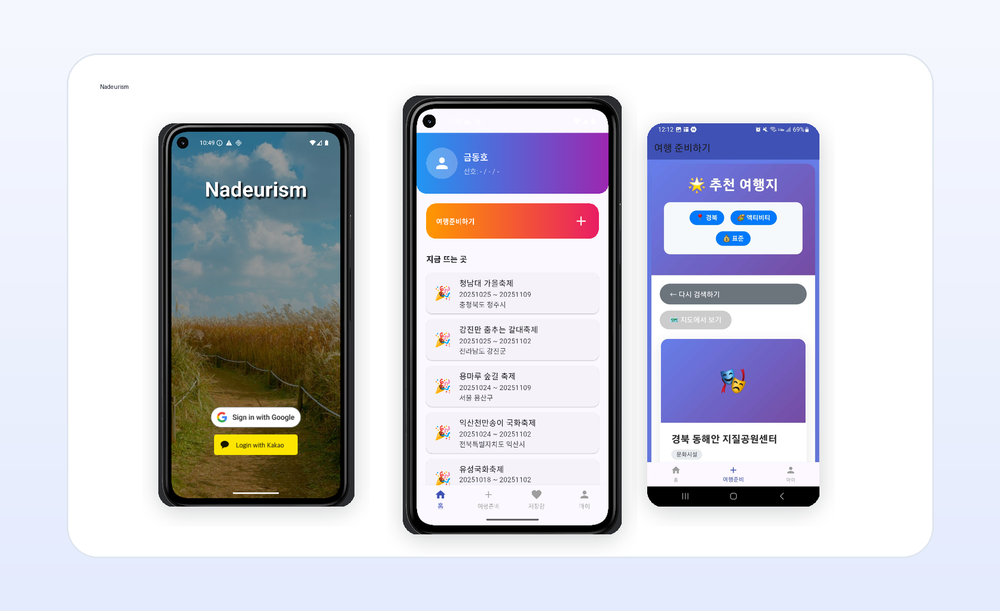
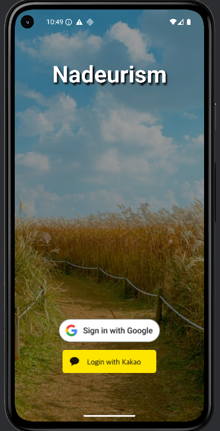
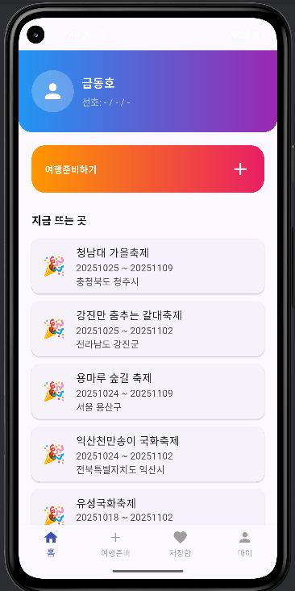
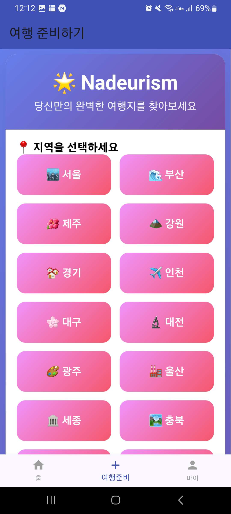
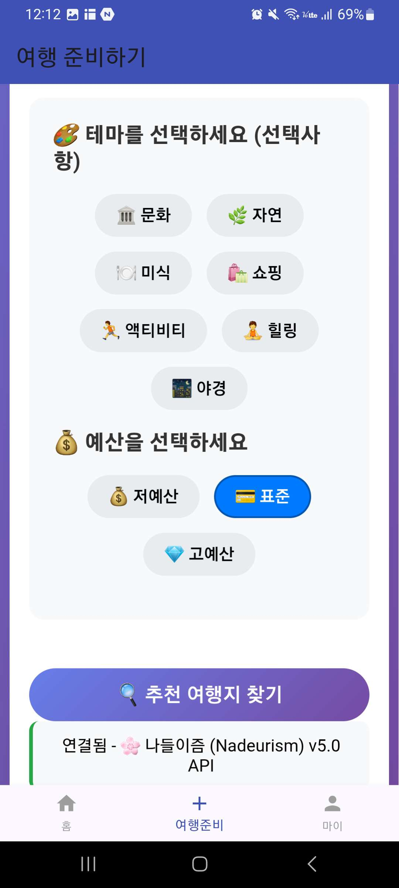
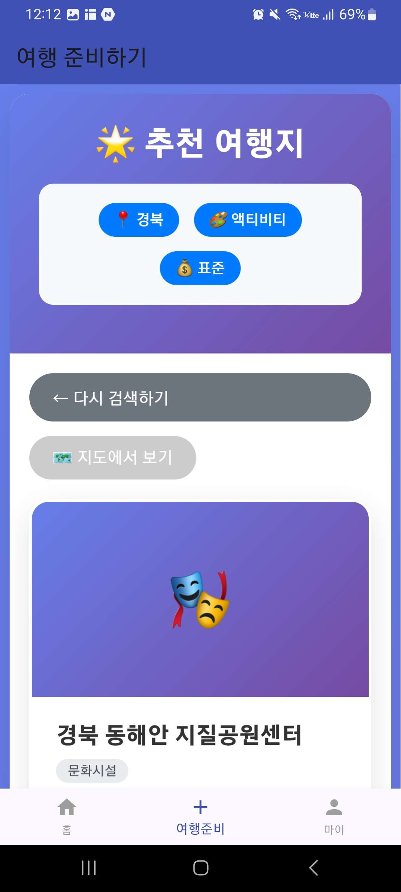
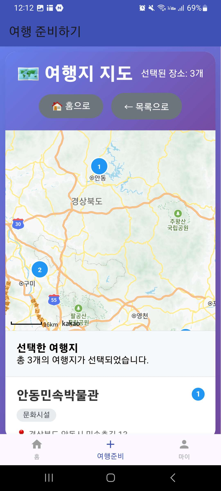

Overview
프로젝트 소개
나들이즘은 사용자의 지역, 테마, 예산 조건에 맞춰 여행지를 추천하고 선택한 장소를 지도에서 확인할 수 있는 모바일 앱입니다. 원스토어 공개 설명처럼 여행 스타일에 맞는 맞춤 일정 추천 경험을 목표로, 로그인 이후 홈, 여행 준비, 추천 결과, 지도, 마이 프로필 흐름을 구성했습니다.
Project
여행 스타일과 지역, 테마, 예산 조건에 맞춰 여행지를 추천하고 지도에 모아보는 출시 모바일 앱

Overview
나들이즘은 사용자의 지역, 테마, 예산 조건에 맞춰 여행지를 추천하고 선택한 장소를 지도에서 확인할 수 있는 모바일 앱입니다. 원스토어 공개 설명처럼 여행 스타일에 맞는 맞춤 일정 추천 경험을 목표로, 로그인 이후 홈, 여행 준비, 추천 결과, 지도, 마이 프로필 흐름을 구성했습니다.
Problem
여행지를 고를 때 사용자는 지역, 취향, 예산, 동선 정보를 여러 서비스에서 따로 확인해야 합니다. 나들이즘은 조건 선택과 추천 결과, 지도 확인을 한 앱 안에 묶어 여행 준비 과정을 가볍게 시작할 수 있도록 설계했습니다.
Flow
Google·Kakao 로그인 → 홈과 축제 정보 확인 → 여행 준비 시작 → 지역 선택 → 테마·예산 선택 → 추천 여행지 조회 → 선택한 장소 지도 확인 → 마이 프로필에서 여행 기록 확인
Troubleshooting
소셜 로그인 이후 앱 화면과 추천 API 요청 흐름이 자연스럽게 이어져야 했습니다.
Google과 Kakao 로그인은 인증 결과, 토큰 전달, 사용자 상태 저장 방식이 달라 화면 진입 조건이 흔들릴 수 있었습니다.
로그인 완료 지점부터 홈 화면 진입, 사용자 정보 표시, 추천 API 호출까지의 상태를 나누어 확인하고 실패 시 다시 시도할 수 있는 흐름으로 정리했습니다.
모바일 앱에서는 로그인 성공 자체보다 이후 화면과 API 요청이 끊기지 않는 경험이 더 중요했습니다.
추천 결과를 단순 목록으로만 보여주면 사용자가 여행 동선을 이해하기 어려웠습니다.
장소 추천과 지도 확인이 분리되면 선택한 여행지가 어느 지역에 있는지 다시 확인해야 했습니다.
추천 결과에서 선택된 장소 수를 관리하고 지도 화면에 번호 마커로 표시해 목록과 위치 정보를 연결했습니다.
여행 앱의 추천 기능은 결과 정확도뿐 아니라 사용자가 바로 이동 계획으로 이해할 수 있는 시각화가 필요했습니다.
Screens






Learning
출시 앱을 만들면서 인증, 추천 API, 지도, 앱스토어 배포까지 사용자가 실제로 설치해 쓰는 모바일 서비스 흐름을 경험했습니다.